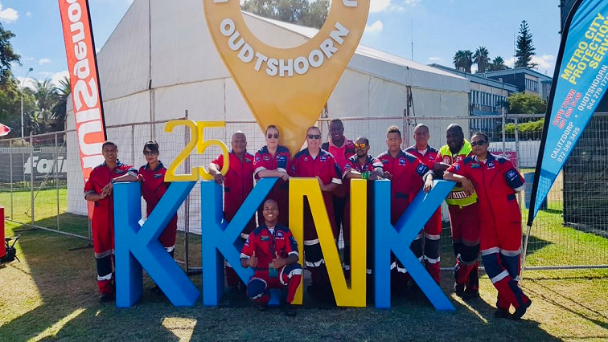
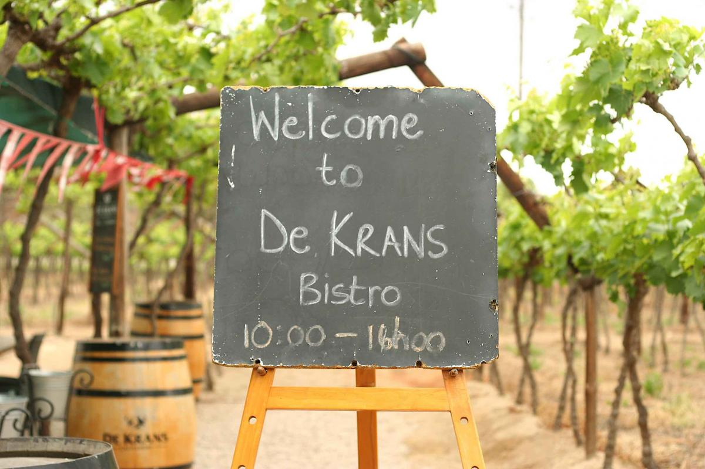

KKNK
29 Mar 2022 – 03 Apr 2022
For almost 20 years, the KKNK (Klein Karoo Nasionale Kunstefees) has been rocking the country. It has been committed to showcasing the arts, culture and heritage of South Africa through the Afrikaans language; bringing folk from all over the country and world together into one, non-stop fun vibe. This street festival is hosted by the Karoo town of Oudtshoorn, which is usually a small farming town with plenty of history. However, every year towards the end of March and the beginning of April, it comes alive with the sounds, flavours, colours and textures of a truly diverse country.The Afrikaans culture is famous for its excellent food, and the Klein Karoo is a popular wine making region. This makes the KKNK the ideal platform on which to enjoy some of the most delicious flavours that are being created within South Africa. There are plenty of activities for the little ones too. In addition to various musical shows, there are also puppet shows, face painting stalls, and storytelling hubs.

Peaches and Hanneport grape season picking at De Krans
November2022 - February 2023
Read this fantastic feature of the wine girl that says it all.